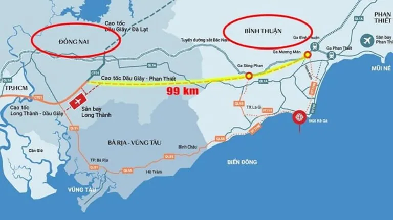
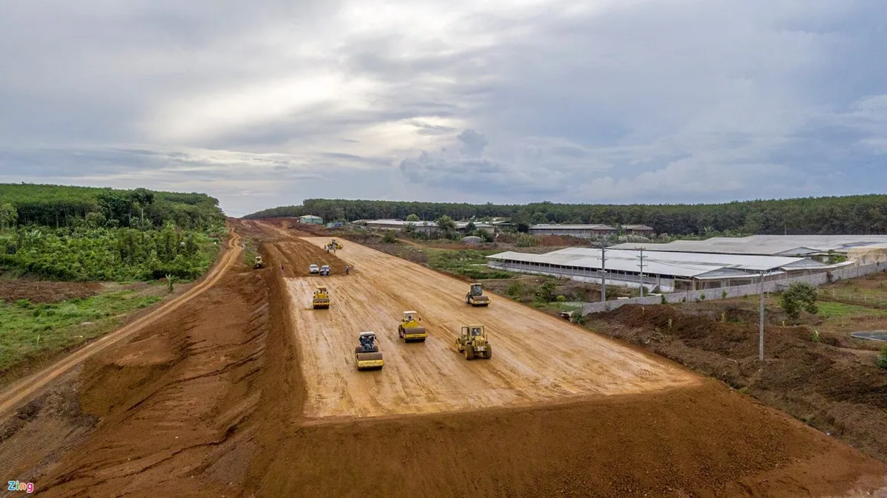
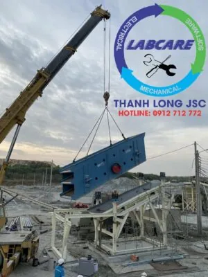
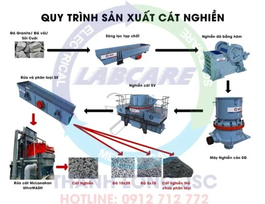

Cập nhật tiến độ xây dựng đường Cao tốc Phan Thiết – Dầu Giây mới nhất. Đây là tuyến đường cao tốc quan trọng, kết nối tỉnh Bình Thuận với cao tốc TP.HCM – Long Thành – Dầu Giây. Vì thế, Công ty XNK VLXD lớn nhất Bình Thuận cung cấp cấp phối cho dự án đã khởi công dây chuyền máy nghiền đá 350 tấn/giờ, thúc đẩy nhanh tiến độ, tiết kiệm chi phí phát sinh kéo dài.
Cao tốc Phan Thiết – Dầu Giây không chỉ giúp đẩy mạnh sự phát triển du lịch, kinh tế của TP. Phan Thiết, Bình Thuận mà còn có vai trò to lớn thúc đẩy kinh tế khu vực Nam Trung Bộ và Nam Bộ nói chung.
Cao tốc Phan Thiết – Dầu Giây khi lắp máy nghiền đá 350 tấn/giờ
Cao tốc Phan Thiết – Dầu Giây đóng vai trò kết nối Phan Thiết (Bình Thuận) với Cao tốc TP.HCM – Long Thành – Dầu Giây. Nhờ đó, tạo tuyến đường huyết mạch thẳng từ TP. Hồ Chí Minh tới Phan Thiết. Thời gian di chuyển giữa Bình Thuận – TP.HCM được giảm xuống một nửa chỉ còn 2 tiếng.
Tuyến đường cũng kết nối tỉnh Bình Thuận và các vùng lân cận với sân bay lớn nhất Châu Á – sân bay Long Thành sau khi tiến độ của sân bay Long Thành hoàn thiện. Như vậy, từ việc Cao tốc Phan Thiết – Dầu Giây được xây dựng, hưởng lợi nhất chính là tỉnh Bình Thuận với thành phố du lịch Phan Thiết. Theo như tiến độ xây dựng đường Cao tốc Phan Thiết – Dầu Giây, tuyến đường sẽ được hoàn thiện vào năm 2022.
Cùng với đó, sự kết nối tốt Phan Thiết, Bình Thuận với Sân bay quốc tế Long Thành giúp thu hút khách du lịch nước ngoài đầu tư vào Việt Nam. Cao tốc Phan Thiết – Dầu Giây cũng giúp kết nối các giữa các vùng kinh tế trọng điểm Đông Nam Bộ với các tỉnh Nam Trung Bộ. Nhờ đó, giúp liên kết phát triển kinh tế. Thu hút nguồn vốn đầu tư mạnh mẽ cho nhiều khu vực.

Cập nhật tiến độ xây dựng đường Cao tốc Phan Thiết – Dầu Giây mới nhất tháng 06/2021 khi đã lắp dây chuyền nghiền đá 350 tấn/giờ
Theo như quy hoạch dự án, Cao tốc Dầu Giây – Phan Thiết có chiều dài hơn 99 km. Tổng dự án được chia làm 4 gói thầu và tiến độ xây dựng đường Cao tốc Phan Thiết – Dầu Giây được dự kiến hoàn thành vào năm 2022.
Hai gói thầu đầu tiên của tuyến đường cao tốc Dầu Giây – Phan Thiết được khởi công ngày 20/9/2020. Hai gói thầu còn lại cũng được bắt đầu vào cuối năm 2020 và tháng 1/2021.
Sau khi được khởi công, hàng trăm thiết bị và công nhân đã được điều đến. Việc phát quang đường, bóc tách lớp đất mặt diễn ra khẩn trương.
Tại thời điểm này đã có thể đi theo đường công vụ từ đầu đến cuối cao tốc.

Tiến độ dự án tháng 03/2021
Cho tới tháng 03/2021, tiến độ xây dựng đường Cao tốc Phan Thiết – Dầu Giây ở tỉnh Đồng Nai đã giải phóng được hết 100% đường.
Ở tỉnh Bình Thuận, công tác đền bù, giải phóng mặt đường cũng đang gấp rút thực hiện.
Tiến độ dự án tháng 06/2021
Theo Thanh Long JSC cho biết, đến tháng 06/2021, tiến độ xây dựng đường Cao Tốc Phan Thiết – Dầu Giây ở gói thầu thứ 3 đã hoàn thành đào hữu cơ, đắp nền đường và đang cấp phối đá dăm.
Đến thời điểm tháng 06, cả 4 gói thầu đã hoàn thành 10% công việc. Đúng với tiến độ đã đề ra trong kế hoạch xây dựng.
Như vậy, tiến độ xây dựng của đường Cao tốc Phan Thiết – Dầu Giây đang được thực hiện rất khẩn trương bất kể tình hình thời tiết.

Vai trò của dây chuyền máy nghiền đá 350 tấn/giờ tại cao tốc Phan Thiết – Dầu GiâyCát nhân tạo là loại cát được nghiền từ đá mi sàng, cát kết, từ sỏi đồi, sỏi sông,…. Cát nhân tạo có cỡ hạt gần tương tự với cát tự nhiên. Cát nhân tạo được đảm bảo các yêu cầu về tính chất cơ lý, cơ hóa. Vì đem lại lợi nhuận vượt trội nên được các chủ đầu tư truyền tai trong các dự án, đầu tư. Thị trường cát nhân tạo tại Việt Nam ngày càng khan hiếm, vì thế nhiêu đơn vị đã định hướng. Nắm bắt được cơ hội khi nhanh tay đầu tư trạm nghiền đá 350 tấn/giờ
Trạm máy nghiền đá 350 tấn/giờ tại Bình Thuận sản phẩm Cát nhân tạo, đá 1×2, đá 2×4, đá 4×6
Sơ đồ Dây chuyền trạm nghiền đá 350 tấn/giờ tại Bình Thuận

Để lựa chọn được dây chuyền trạm nghiền cát nhân tạo có chất lượng sản phẩm đạt tiêu chuẩn để cấp cho dự án cao tốc Vĩnh Hảo, việc lựa chọn thiết bị trong dây chuyền trạm nghiền cát nhân tạo cần được cân nhắc nhiều yếu tố khác nhau:- Nguyên vật liệu đầu vào để sản xuất cát nhân tạo (nghiền từ sỏi sông, đá cát kết, từ đá granite,…)
- Công suất của dây chuyền trạm nghiền cát nhân tạo phải đảm bảo thực (về con số đầu ra, về công suất hoạt động, chất lượng thiết bị,…)
- Sản phẩm đầu ra đạt TCVN
- Đơn vị cung ứng dây chuyền trạm nghiền cát nhân tạo (độ uy tín từ nhà sản xuất, chất lượng sản phẩm, chế độ bảo hành – bảo trì, chế độ chăm sóc khách hàng,….)
Thanh Long JSC là đại diện duy nhất từ thương hiệu nhà sản xuất SRH tại Việt Nam
Là thiết bị nghiền số 1 thế giới, với hơn 150 năm đi đầu trong lĩnh vực công nghệ nghiền sàng đá, các trạm nghiền từ thương hiệu nhà sản xuất SRH được các chủ đầu tư lựa chọn và tin tưởng bởi các yếu tố sau:
- Tiết kiệm điện từ 4000đ/ 1 khối đá đầu ra.
- Vật tư tiêu hao bền hơn 2 lần so với các NSX khác, và luôn có sẵn tại kho.
- Hoạt động bền bỉ không dừng máy, chi phí sản xuất thấp
- Hệ thống báo hiệu cảnh báo áp suất, nhiệt độ, khe xả trên màn hiển thị.
- Hệ thống chống kẹt đá, phát hiện kim loại, chống quá tải được tích hợp.
- Đội ngũ kỹ sư tay nghề cao, nhiều kinh nghiệm. Đã được Thanh Long đào tạo theo tiêu chuẩn Châu Âu, sẵn sàng xử lý sự cố khi cần.
Thanh Long JSC đại diện SRH tại Việt Nam chuyên cung cấp các sản phẩm dịch vụ về khai thác khoáng sản từ 100 tấn/h đến 2000 tấn/h:
- Dây chuyền nghiền cát/đá cố định: Máy kẹp hàm, máy nghiền côn, sàng rung phân loại, máy nghiền cát nhân tạo VSI, …
- Dây chuyền nghiền cát/đá di động: máy kẹp hàm di động, máy nghiền côn di động, sàng rung phân loại di động, máy nghiền cát nhân tạo VSI di động,..
- Công nghệ rửa/tách: Máy rửa cát theo module, sàng rung tách nước, máy tuyển rửa cát, máy tách cát mịn, máy thu hồi cát mịn…
- Vật tư, thiết bị phụ tùng: Dao nghiền, lưới sàng, má kẹp hàm, nón côn, …
Các dự án lớn đã lắp đặt dây chuyền tại Việt Nam:
Khánh thành dây chuyền nghiền cát nhân tạo phục vụ cho bê tông
GIAO HÀNG MÁY NGHIỀN CÁT NHÂN TẠO VSI
Cận cảnh máy nghiền đá hoạt động tại mỏ đá Việt Nam
Lắp đặt trạm nghiền đá và cát xây dựng được nhập khẩu hoàn toàn từ Phần Lan.
Khủng khiếp máy nghiền đá xây dựng lớn nhất Việt Nam
Toàn cảnh dây chuyền nghiền cát nhân tạo tại Việt Nam
Kênh video Youtube: Thế giới máy nghiền đá và Thanh Long JSC
Page Facebook: Công Nghệ Máy Nghiền Đá
Website: https://thegioimaynghienda.com https://labcare.com.vn/
Zalo, hotline: 0912 712 772
#bn